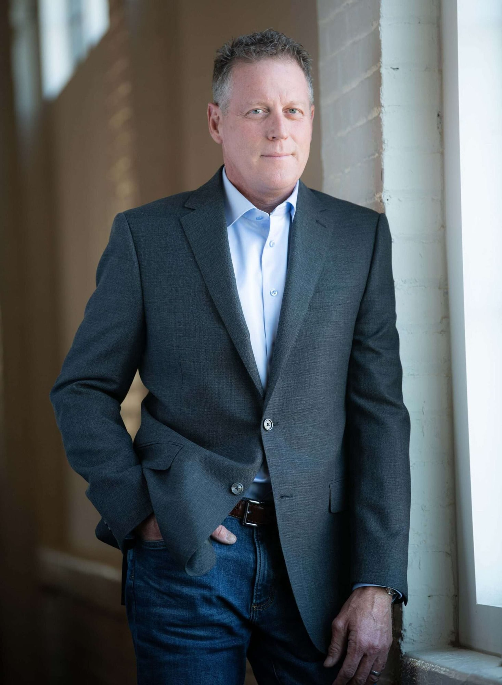

Keynote Speaker Media Guest Podcaster Author
Straight-Forward Agriculture Dialogue
A Powerhouse in the Agriculture industry, Damian Mason travels the globe to speak about the industry he loves.

Since 1994, he has spoken to over 2,400 audiences in all 50 states and 7 foreign countries.
Not Your Boring Ag Speaker, Damian is:
Thought Provoking
Engaging
Enthusiastic
Hilarious
Damian has an uncanny ability to stir up feelings of dignity and pride for people working in the most important industry in the world.
Damian Mason has an exceptional understanding of the Agriculture industry, he’s been involved in it his entire life. That, combined with his passion to stay one step ahead of what’s looming for the industry, he works tirelessly to stay up to date with current trends, research current events and news, and connect with industry leaders. He provides immediate take-aways, future outlooks, and insights, to his audiences, but most importantly, Damian has an uncanny ability to stir up feelings of dignity and pride for people working in the most important industry in the world.
You don’t need anyone telling you the weather forecast or the commodity prices, technology does that for you! What you need is a connection with real-world agriculture people and topics that inform, educate, and help you grow.

Some of Damian’s Clients:
After speaking to companies such as Merck, Land O’Lakes, and Cargill


Man, that guy makes you think! I loved it!
What People Are Saying…
Join the Conversation
Connecting people of the world’s most important industry.
You don’t need anyone telling you the weather forecast or the commodity prices, technology does that for you! What you need is a connection with real-world agriculture people and topics that inform, educate, and help you grow.
The Business of Agriculture:
More Than 70,000 Views & Downloads Per Month
Podcast by Damian Mason